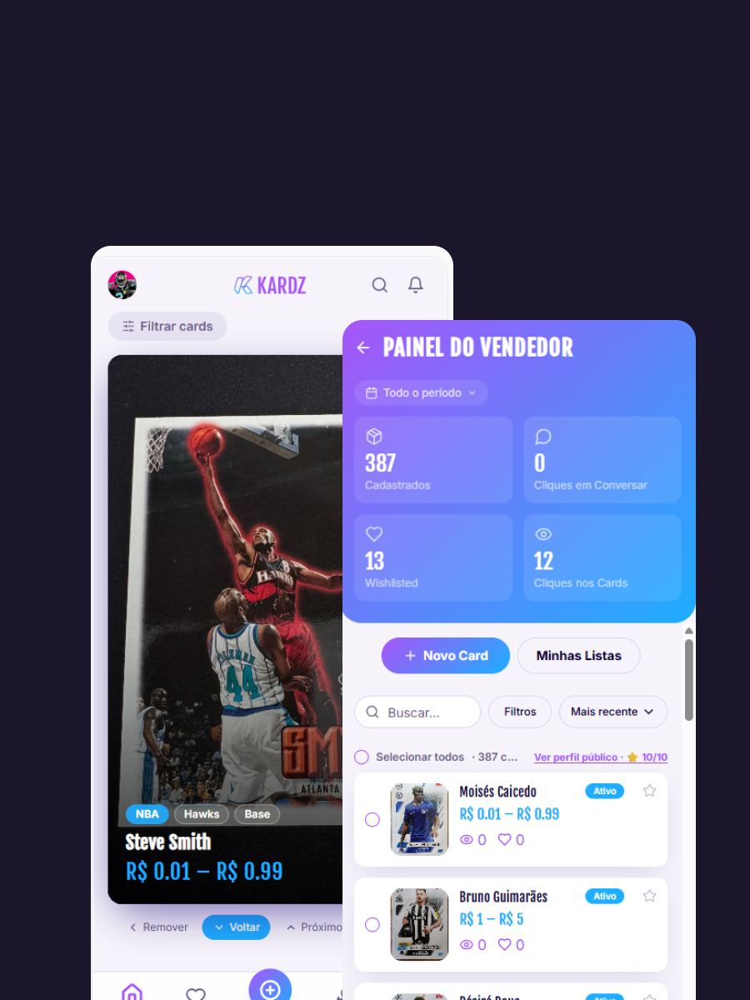
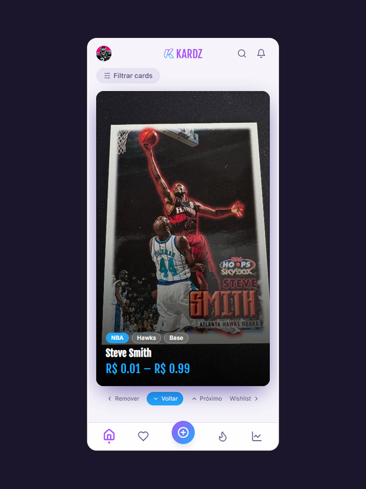
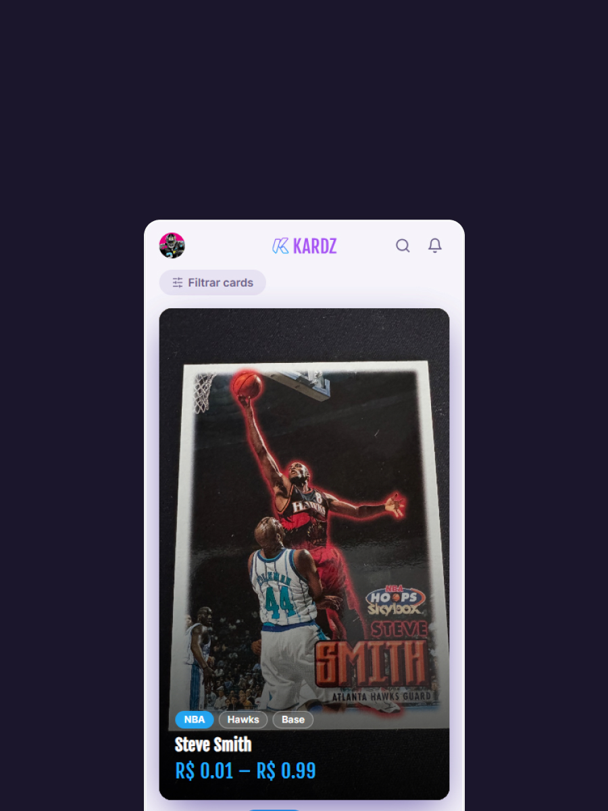
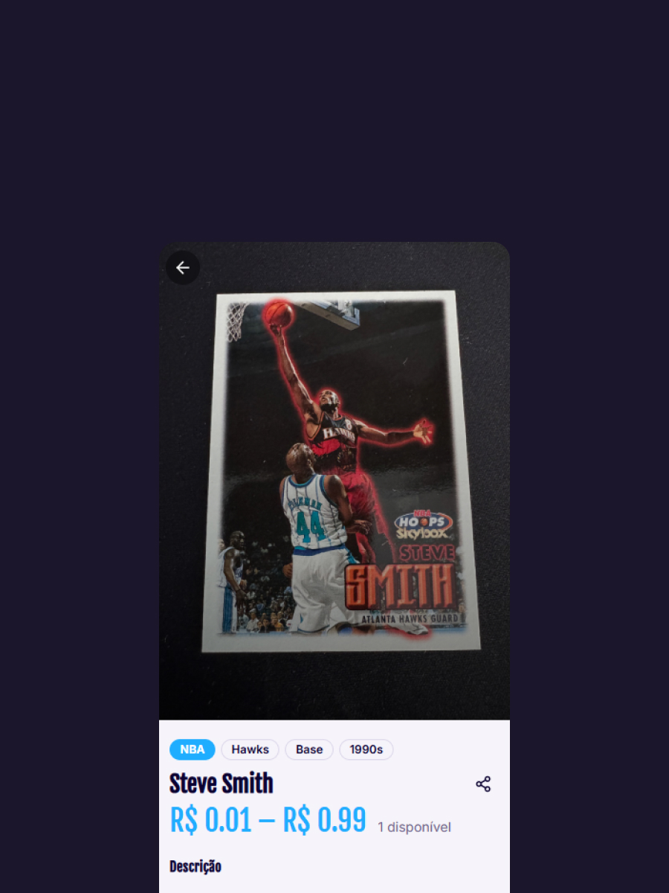
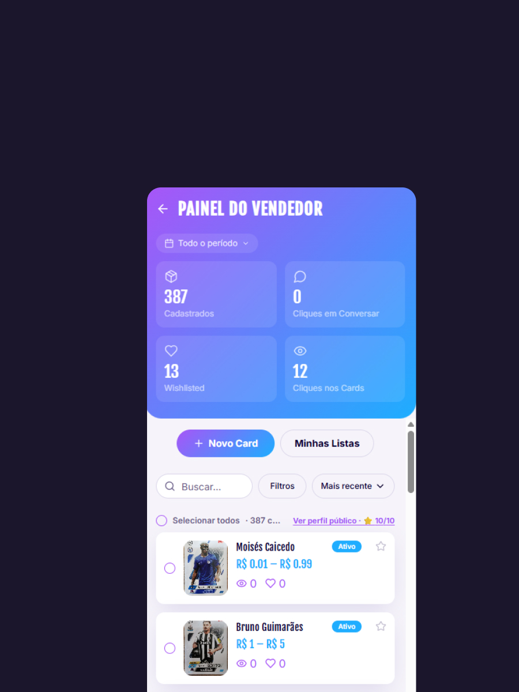
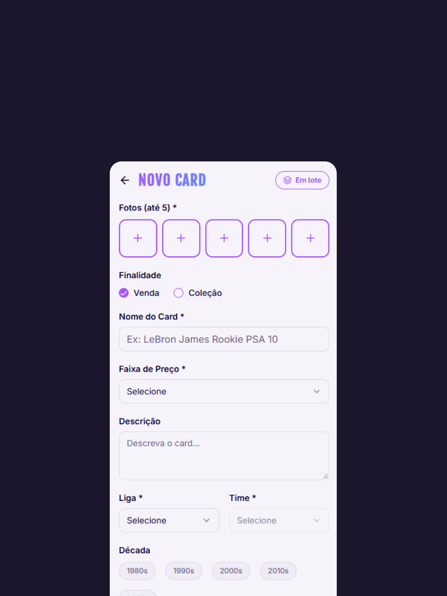

Visual first
The card is the protagonist.
Kardz is a marketplace designed around discovery, collection and direct negotiation of physical trading cards between people.

Collectors already had demand, inventory and communities. What was missing was a product designed specifically around buying and selling cards.
The experience was distributed across social networks, messaging apps, spreadsheets and generic marketplaces.
The card is the protagonist.
Reduce steps between discovery, interest and conversation.
Make browsing feel closer to collecting.
Facilitate connection without forcing a complex transaction.

The feed uses gesture as a lightweight interaction model. The user can move forward, go back, save an item or hide it without leaving discovery.
Keep the user in discovery mode while giving every card a clear path to action.




Troque as imagens diretamente na pasta /assets.
Feed, filters, leagues, teams, decades, card types and display rules.
Wishlist, saved interests and card-level actions.
Dashboard, inventory, card management and seller profile.
Conversation context and WhatsApp handoff.
Single and batch registration with multiple images.
Price ranges, catalog rules, leagues and categories.
The seller experience was treated as a product of its own. Publishing cards should be fast enough to support real inventory.
Rapid product development, UI iteration and functional prototyping.
Data, authentication and backend services.
Mobile distribution based on the existing web experience.
Wrapper and publishing workflow.
Domain and DNS infrastructure.
Google authentication in the account experience.
Catalog rules, price ranges, leagues, teams, card types and feed behavior can evolve through administration rather than requiring a new interface architecture.
A marketplace model centered on the card as the primary object.
Flows connecting discovery, intent, seller context and negotiation.
Seller and admin experiences designed for ongoing inventory.
A web-first product with a path to mobile distribution.